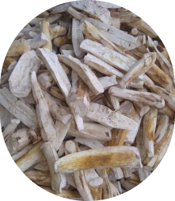
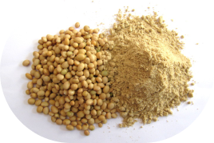
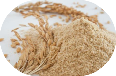
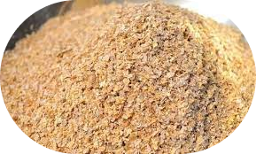
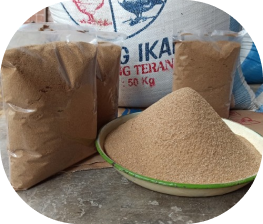
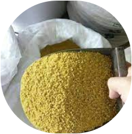

BERIKUT PENJELASAN BAHAN YANG KAMI GUNAKAN
Tanaman singkong sebagai sumber bahan pakan lokal mampu mencukupi kebutuhan protein. Pemanfaatan singkong sebagai pakan ternak , lanjutnya, telah banyak dilakukan. Namun penggunaannya dibatasi karena adanya sam sianida yang bersifat racun jika dikonsumsi dalam jumlah tertentu dalam keadaan segar, maka dari itu kita keringkan sebelum proses pembuatan voer.
Kedelai mentah mengandung beberapa macam racun (toxicant) yang dapat menghambat enzim pencernaan ternak khususnya unggas (tripsin) dan merusak saluran pencernaan. Ternak terutama yang muda akan terhambat tumbuhnya jika diberi kedelai mentah. Oleh karena itu, kedelai utuh harus diolah terlebih dahulu untuk mengurangi aktivitas racunnya salah satunya dengan mengubahnya menjadi tepung, sehingga dapat bermanfaat sebagai asupan protein ternak.
Dedak padi atau bekatul adalah hasil samping pada pabrik penggilingan padi dalam memproduksi beras Dedak padi digunakan sebagai pakan ternak karena mempunyai kandungan gizi yang cukup tinggi, harganya relatif murah, mudah diperoleh.

Nasi kering merupakan makanan pengganti jagung yang baik dan berprotein tinggi juga penuh karbohidrat sehingga ini sangat baik sekali jika digunakan untuk ternak jenis unggas. Nasi aking mendukung pertumbuhan ternak unggas sebagai makanan pokok tersendiri bagi unggas tersebut dengan nasi aking sebab disamping mengandung zat mineral yang baik juga sangat berpotensi menjadi penentu berat pada tubuh unggas.
Limbah gandum sama seperti jagung yang dapat digunakan sebagai bahan baku untuk pembuatan produk pakan ternak. Apalagi sifat pollard yang memiliki kadar protein dan nutrisi yang tinggi. Angka konversi pollard dari bahan baku sekitar 25-26%. Popularitas pollard sebagai bahan pakan ternak ditunjang oleh palatabilitasnya (disukai hewan ternak) cukup tinggi.
Tepung ikan, dengan kadar proteinnya yang tinggi, ia dapat digunakan sebagai komposisi penting pembuatan bahan pakan ternak yang berguna untuk mengoptimalkan kualitas pada binatang ternak. Tepung ikan banyak mengandung asam lemak DHA dan EPA yang berperan untuk meningkatkan nilai dan keproduktivan hewan ternak.
BERAPA HARGA JUAL VOER N51H PER KG NYA?
Pada saat ini harga voer naik menjadi 10.000-12.000/kg, tetapi kami berani menjual kualitas voer N51H hanya 8.000/kg saja. Anda sudah dapat memenuhi nutrisi ternak anda.